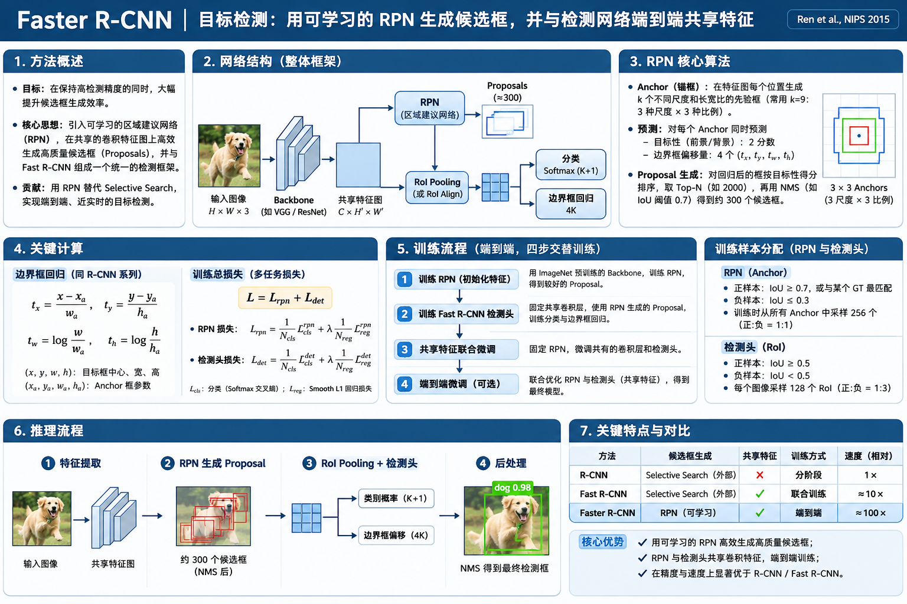

Faster R-CNN 网络结构、核心算法、训练与推理
Faster R-CNN: Towards Real-Time Object Detection with Region Proposal Networks · Ren, He, Girshick & Sun · 2015
Fast R-CNN 已经把候选框的分类与回归整合进一个网络，但候选框仍要由外部算法产生。Faster R-CNN 的突破，是让网络自己学习提出候选框，并让 RPN 与检测器共享卷积特征。
研究动机：Fast R-CNN 的瓶颈移到了哪里？
从“卷积重复计算”转向“候选区域生成仍然依赖外部算法”。
此前 R-CNN → SPPnet → Fast R-CNN 已逐步消除了“每个候选框都要做一次 CNN”以及“分类、回归分开训练”的问题。然而 Fast R-CNN 推理前，还要调用 Selective Search 来得到一批 RoI。论文报告这一步在其 CPU 环境下平均仍需约 1.5 秒，成为整个系统的主要耗时来源。
外部提框慢，且候选框算法不会根据检测 Loss 学习；卷积共享解决不了这一步的瓶颈。
直接在 CNN 特征图上增加轻量候选框预测头，RPN 和第二阶段复用同一份卷积特征。
完整网络结构：一个 Backbone、两个任务阶段
沿着数据流回答每个模块：输入是什么，输出是什么，为什么必须存在。

先建立整体直觉：RPN 不负责判断“猫还是狗”，它只负责“哪里可能有物体”；Fast R-CNN 检测头才负责具体类别与精细定位。
整图只提取一次共享卷积特征图 C×H×W。
在该特征图上密集预测“物体性”分数与候选框。
接收 RPN 候选框，RoI Pooling 后做类别判别与二次精修。
2.1 两阶段究竟分工在哪里？
| 对比 | 第一阶段：RPN | 第二阶段：Fast R-CNN 检测头 |
|---|---|---|
| 输入 | 共享特征图的局部窗口 + 固定 Anchor | 共享特征图 + RPN 输出的 Proposals |
| 预测是什么 | 物体 / 背景分数 + 每个 Anchor 的 4 个偏移量 | K+1 类概率 + 每个前景类别的 4 个偏移量 |
| 主要问题 | 哪里可能存在任意物体？ | 究竟是什么物体？它的框应该更准确放在哪？ |
| 是否有 GT 监督 | 有，用 GT 框给 Anchors 分配正负与回归目标 | 有，用 GT 类别与 GT 框监督 RoI 分类、回归 |
| 能否共享卷积 | 两阶段共享 Backbone 的卷积特征；第二阶段不用重新提取整张图特征 | |
RPN 核心算法：它究竟怎样生成候选框？
不是直接凭空输出框，而是以密集 Anchor 为参考，预测有无物体与框的调整量。
RPN 是一个滑动在共享特征图上的小型全卷积网络。在特征图的每个位置，它都对一组不同大小、不同宽高比的参考框（Anchor）进行评估。这些 Anchor 本身是预先定义的几何参考，模型要学的不是 Anchor 坐标，而是每个 Anchor 的物体性分数和相对于它的偏移量。
3.1 Anchor：为什么一个特征图位置需要多个参考框？
特征图上的一个位置只有一组局部特征，怎么同时提出小方框、大方框、长条框等不同形状的候选区域？
原论文使用 3 种面积尺度（128²、256²、512² 像素²）× 3 种宽高比（1:1、1:2、2:1），形成 9 个 Anchor。这些 Anchor 的中心位于同一个特征图位置对应的图像位置，不是把图片真实切成九份。RPN 对每个 Anchor 各预测一组分数与偏移量。
重点不是让 Anchor 恰好等于目标，而是用不同形状的起点降低回归难度。后面通过回归把 Anchor 移动和缩放成更贴合物体的 Proposal。
一个位置
它对应图像中一个中心位置，Anchor 共享中心但形状不同。
一张特征图
若有 H×W 个位置，参考框数量就是 H × W × 9，可以轻松超过一万个。
不等于最终预测框
Anchor 不会自己移动；网络预测 Δx,Δy,Δw,Δh，解码后才得到 Proposal。
3.2 RPN 的网络层：3×3 卷积，接两条 1×1 预测分支
原论文的 RPN 在共享 Feature Map 上以 3×3 卷积提取当前位置邻域的特征（VGG16 版本得到 512 维中间特征；ZF 版本为 256 维），随后通过两个 1×1 卷积预测分类与回归。在每个位置：
每框：物体 / 背景
每框：4 个偏移量
RPN classification ≈ (2k) × H × W
RPN regression ≈ (4k) × H × W 其中 k=9
注意：这里并不是对 9 个 Anchor 分别运行 9 个 CNN。9 组预测共享同一个位置的卷积特征，在 1×1 卷积的输出通道上拆为不同 Anchor 的结果。每个位置做的 3×3 卷积核参数也在整张特征图上滑动共享。
3.3 RPN 如何知道哪个 Anchor 是正样本？
RPN 没有 Selective Search 的人工区域合并规则，训练时谁告诉它“这个 Anchor 应该覆盖物体”？
答案是使用 GT 框与 Anchor 的 IoU 来分配监督。原论文正负规则比简单的一刀切阈值多一个很重要的兜底条件：
正样本 · Positive
① 与任一 GT 的 IoU 高于 0.7；或 ② 它是某个 GT 的最大 IoU Anchor（即使未达到 0.7）。
负样本 · Negative
不属于任何正样本，并且与所有 GT 的 IoU 都小于 0.3。
忽略 · Ignore
其余 Anchor 不参与本次 RPN 分类损失，避免边界模糊样本干扰。
每张图可能产生大量 Anchor，其中绝大多数是背景。原论文不会把所有 Anchor 都放进一个 mini-batch，而是随机采样 256 个 Anchor，正样本最多约一半（不足时由负样本补足）。这属于第一阶段 RPN 的采样策略，不要与第二阶段 Fast R-CNN 的 128 个 RoI mini-batch 混为一谈。
3.4 边界框回归：不是回归绝对坐标，而是修正 Anchor
有了一个 Anchor (xₐ, yₐ, wₐ, hₐ) 后，RPN 输出 4 个数 (tₓ,tᵧ,t𝓌,tₕ)。前两个表示中心点偏移，后两个表示宽高在对数空间中的缩放。
x = xₐ + wₐ · tₓ y = yₐ + hₐ · tᵧ
w = wₐ · exp(t𝓌) h = hₐ · exp(tₕ)
3.5 从几万个 Anchor 到几百个 Proposal：RPN 后处理
注意：RPN 的输出仍不是最终检测结果。每个 Anchor 的位置经过回归后得到 Proposal，并附一个物体性分数。因为大量候选框高度重叠，还需要裁剪、按分数排序、NMS 去重、Top-N 选择，再交给第二阶段。
按 Objectness 排序
候选区域，不是最终类别
即使一个 Proposal 的 objectness 很高，也只能说明“里面可能有物体”，无法直接确定类别和最终框。
尽量保留一个高分框，去掉重复框
按分数从高到低，保留当前最高分框，删除与之 IoU 超过阈值的其他框，再继续处理剩余框。
第二阶段：仍然是 Fast R-CNN 的检测机制
RPN 只替换“候选框来源”，第二阶段依旧负责分类和精确定位。
RPN 挑出数百个可能存在物体的矩形框以后，这些框作为 RoI，与同一份共享卷积特征图一起送给第二阶段。接下来的步骤与 Fast R-CNN 相同：坐标映射 → RoI Pooling → FC → 分类 / 回归双分支。
不同大小统一
含背景
类别专属框调整
第一阶段回归
以 Anchor 为参考，先调整成“可能包含物体”的 Proposal。它是类别无关的候选区域回归。
第二阶段回归
以 Proposal / RoI 为参考，再根据预测的前景类别做精确调整。原始 Fast R-CNN 头使用 4K 类别专属回归值。
完整训练：谁监督谁？哪些参数被更新？
相比 Fast R-CNN，多出一个具有独立监督目标的候选框预测网络 RPN。
第一阶段监督：找到潜在物体
训练单位是 Anchor；用 GT 框决定哪个 Anchor 是前景，学习 objectness 与 Anchor→GT 的回归。
负责优化：RPN 预测层，以及允许更新的共享卷积层
第二阶段监督：识别类别并精修框
训练单位是 RoI / Proposal；以 GT 类别监督 K+1 分类，以 GT 框监督对应类别的回归。
负责优化：检测头，以及允许更新的共享卷积层
5.1 两个阶段的 Loss：形状相似，但训练样本与意义不同
+ (λ/Nreg) ∑ p*ᵢ · Lreg(tᵢ,t*ᵢ)
pᵢ 是 Anchor 的前景概率；p*ᵢ 是 GT 生成的 0/1 标签；tᵢ 是预测框偏移，t*ᵢ 是 Anchor 相对 GT 的目标偏移。
只有正 Anchor（p*ᵢ=1）计算回归损失；背景 Anchor 只承担分类损失。
u 是 RoI 的 GT 类别，背景记作 0；p 是 K+1 类概率；tᵘ 是类别 u 对应的 4 个回归值，v 是 GT 的回归目标。
前景 RoI 同时学习分类和回归；背景 RoI 只学习分类。
RPN 的正负样本
正：IoU > 0.7，或各 GT 最佳 Anchor
负：非正样本且所有 GT IoU < 0.3
忽略：其余
RPN mini-batch
单张图片中采样 256 Anchors，正样本比例最多约 50%，不足用背景补齐。
检测头 mini-batch
沿用 Fast R-CNN 的图像中心采样方法，原始示例中每个 mini-batch 使用 2 张图像、共 128 RoIs。两个阶段的 batch 不是同一个概念。
论文 RPN 损失中的 λ、Ncls、Nreg 用来平衡与归一化两个损失项：原论文早期实现采用 λ=10、Ncls=256、Nreg≈2400；这些属于具体实现设置，不能被理解为所有 Faster R-CNN 框架的统一超参数。
5.2 原论文为什么采用“四步交替训练”？
RPN 和检测头既然共享 CNN，能不能只写一个总 Loss，从最终检测结果直接反向传播到每个候选框？
原论文指出两者独立训练会得到不同的卷积权重；而 Proposal 生成涉及筛选过程，直接把不断变化的候选框与检测器一次性联合优化并不那么简单。因此论文提出四步交替训练，最终让两者共享一套卷积特征。请点击下面四个步骤查看每一步的参数状态。
第一步 · 初始化并训练 RPN
用 ImageNet 预训练 Backbone 初始化 RPN，利用 Anchor 分类与回归损失，训练其专属预测层及可更新的卷积层。此时输出第一批 Proposals。
更新：RPN + 可训练 Backbone 检测头：尚未使用5.3 反向传播：RPN 可以学习，为什么 NMS 仍然不要求可微？
你刚刚研究过 Max Pooling 与 Selective Search 的区别，这里尤其容易误会。Faster R-CNN 不是把 NMS、Top-N 选择等离散运算变成了可微函数，而是给候选框预测分支本身提供了监督损失。
与 Selective Search 最大的区别并非“框选择变得可微”，而是 RPN 有了自己的训练目标：预测哪些 Anchor 有物体，以及每个 Anchor 应该怎么修正。因此即使 NMS 不可微，RPN 仍能够通过自身 Loss 学习。
完整推理：一张图到底经历了哪些计算？
按真实执行顺序串起两阶段，看到每一步数据的形态。
原论文短边约 600
得到 Feature Map
2k 得分 + 4k 偏移
RPN NMS / Top-N
固定大小张量
4K BBox 回归
输出类别、得分、框
历史价值与适用边界
到底解决了什么、继承了什么、又有哪些问题没有解决。
| 模型 | 候选框从哪里来 | CNN 特征是否共享 | 训练方式的关键变化 | 历史上的核心价值 |
|---|---|---|---|---|
| R-CNN · 2014 | Selective Search | 候选框之间不共享卷积 | CNN、SVM、边框回归分阶段 | 深度特征 + 候选框检测范式 |
| SPPnet · 2014 | Selective Search | 整图共享卷积 | 检测微调仍不完全统一 | 共享卷积 + 任意大小区域的池化表示 |
| Fast R-CNN · 2015 | Selective Search | 整图共享卷积 | 分类与边框回归联合训练 | 高效检测头 + RoI Pooling + Multi-task Loss |
| Faster R-CNN · 2015 | RPN（可学习） | RPN 与检测头共享 Backbone | RPN + 检测头；原论文四步交替训练 | 可学习候选框替代外部搜索，形成共享特征的两阶段检测器 |
里程碑意义
将原本手工设计、CPU 较慢的候选框生成，变成了可训练的密集预测任务；Proposal 生成几乎不需要额外重复的主干卷积。
真实代价
依旧包含多阶段候选框筛选、RoI Pooling 与逐区域检测；模型逻辑比单阶段检测器复杂，推理速度受主干与 RoI 数量影响。
历史边界
RPN 不等于“第一个神经网络候选框方法”。同时，原始 RPN 的 Anchor 标签与后处理并非处处可微，不能简单说成所有步骤完全端到端。
1830 ms / image
候选框生成约 1510 ms；整体约 0.5 FPS。
198 ms / image
额外 RPN 约 10 ms；全系统约 5 FPS。
理解检查与论文出处
回答下面三个问题，就抓住了 Faster R-CNN 的核心。
为什么 RPN 可以反向传播，Selective Search 不行？
RPN 的分类分数和框偏移由可训练卷积头产生，并被 GT Anchor 标签与回归目标监督。Selective Search 主要是不可微的手工区域合并，没有对应的可学习网络参数。
RPN 和检测头都回归框，有什么区别？
RPN 从 Anchor → Proposal，不区分类别；第二阶段从 Proposal → 类别专属精修框，同时预测 K+1 类概率。
为什么整张图片只需要提取一次卷积特征？
RPN 从共享 Feature Map 上卷积预测；第二阶段从相同 Feature Map 里抽取 RoI 特征，因此不需要对每个 Proposal 重新运行 Backbone。
“端到端”是不是意味着所有操作都可以求导？
不是。RPN 与检测器在统一结构中有自己的监督与训练策略，但原始方法仍包含 NMS、Top-N 等离散选择，四步交替训练也不意味着后段 Loss 直接经过框坐标选择回到 RPN。
- S. Ren, K. He, R. Girshick, J. Sun. Faster R-CNN: Towards Real-Time Object Detection with Region Proposal Networks. NIPS 2015. 论文页面 · 论文 PDF
- R. Girshick. Fast R-CNN. ICCV 2015. arXiv
- Faster R-CNN 后续扩展论文：IEEE TPAMI, 2017. 期刊索引